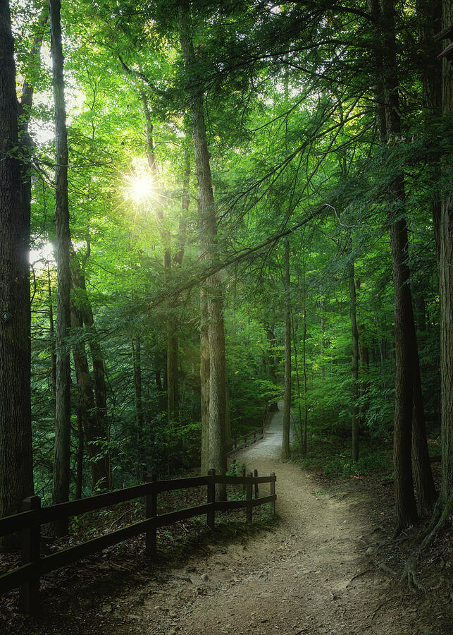
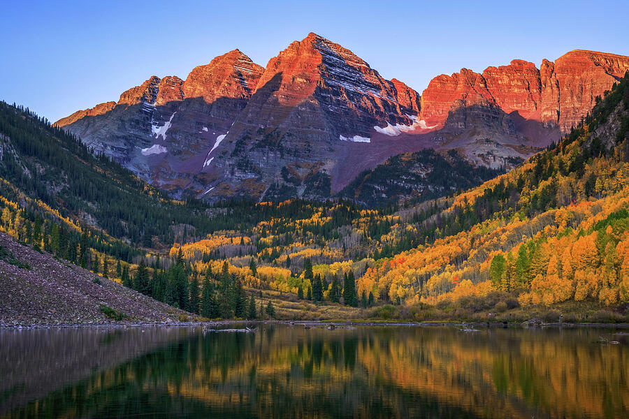
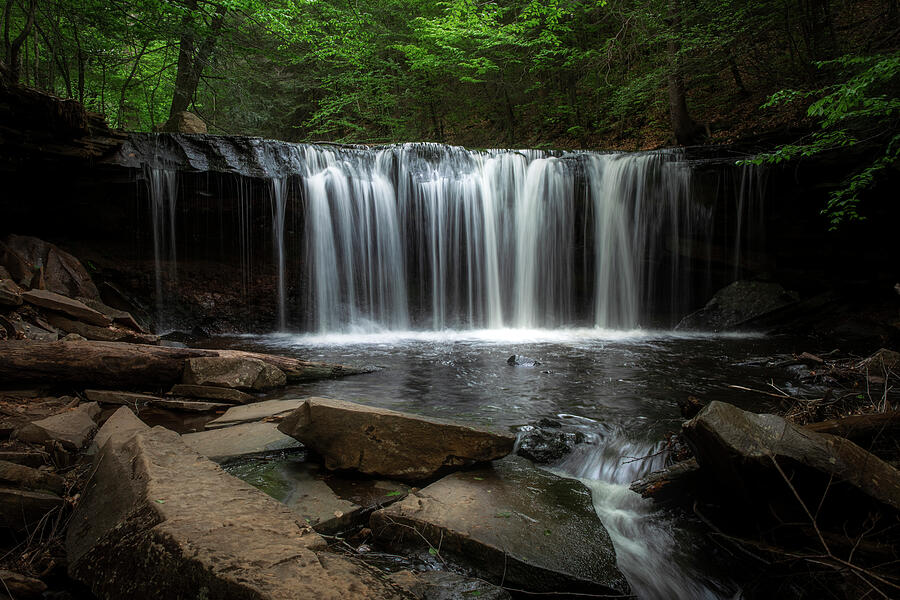
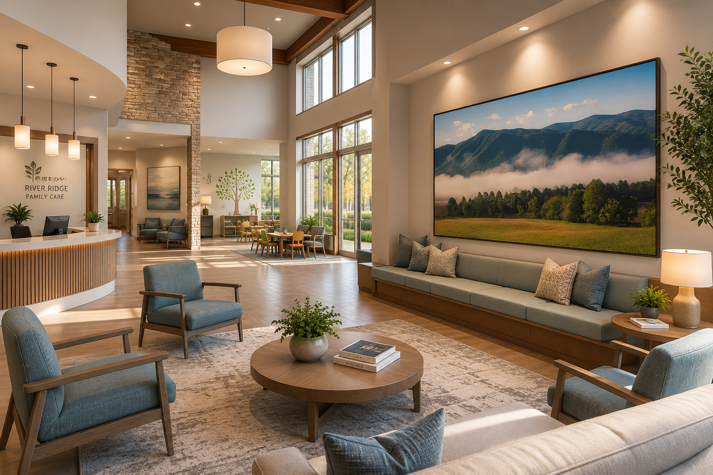

Living Room Artwork
How to Choose Large Wall Art for Living Rooms
A practical guide to scale, mood, interior style, and print materials for choosing oversized wall art with confidence.
Journal & Artwork Guides
Practical artwork guides, field notes, and interior inspiration from Dan Sproul, a Lima, Ohio fine art nature photographer creating landscape artwork for homes, healthcare, hospitality, offices, and residential interiors.
Advice on size, format, framing, placement, and choosing nature photography for real rooms.
Stories from national parks, Ohio landscapes, waterfalls, coastlines, mountains, and wild places.
How nature artwork supports homes, wellness spaces, healthcare, hospitality, and offices.
Latest Field Notes
Travel routes, changing weather, wildlife encounters, and behind-the-lens notes from the places that shape my finished photography.

Featured Field Note · Mohican State Park
A one-day photography route beginning at Lyons Falls, with forest light, ferns, moss, boulders, wildlife, practical planning notes, and the quieter woodland scenes I found along the trail.

Cuyahoga Valley · Ohio
Forest light, waterfalls, bridges, reflections, intimate woodland scenes, and nearby Northeast Ohio extensions.
Oregon Coast Road Trip
An eight-day route through sea stacks, wildlife, lighthouses, mountain lakes, and Columbia River Gorge waterfalls.
.jpg)
Lima Ohio · Sunrise Photography
Sunrise photography tips, misty lake light, thoughtful composition, and an unexpected kayaker close to home.

Maine Fall Road Trip
Moosehead Lake, Baxter State Park, waterfalls, and northern Maine autumn.

Colorado Fall
Golden aspens, mountain light, Maroon Bells, Kebler Pass, and Last Dollar Road.
Smoky Mountains
Misty ridges, spring forests, waterfalls, wildlife, and quiet mountain light.

Spring Waterfalls
Gorge trails, stone steps, mist, spring foliage, and finished waterfall prints.
Artwork Guides
A focused selection of guides covering scale, atmosphere, wellness, and artwork planning for residential, healthcare, and hospitality spaces.

Living Room Artwork
A practical guide to scale, mood, interior style, and print materials for choosing oversized wall art with confidence.

Healthcare & Waiting Rooms
A practical guide to choosing nature artwork for medical offices, therapy practices, clinics, and patient-facing spaces.

Hospitality Design
How hotels, resorts, lodges, restaurants, and guest spaces can use regional artwork, scale, and coordinated collections to build identity.
Need Help Choosing Artwork?
Send a room photo, wall dimensions, or project direction and I can help recommend artwork, sizing, format, and collection paths.